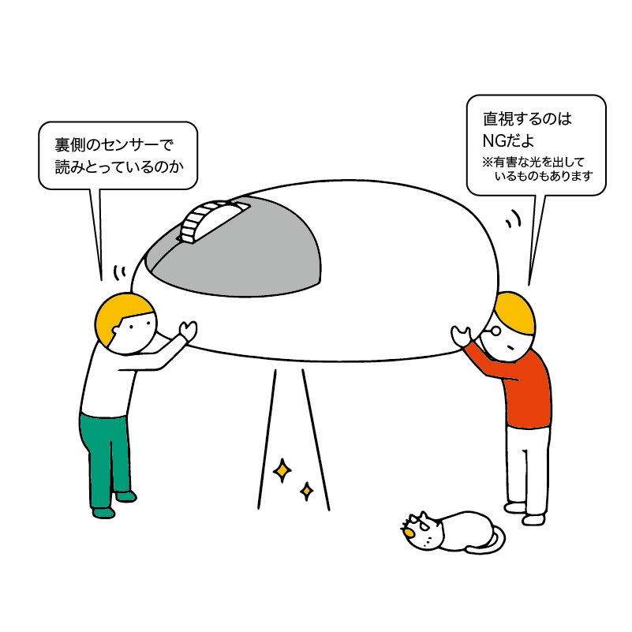
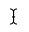
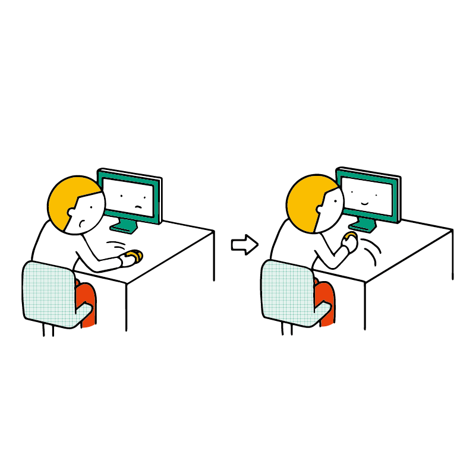
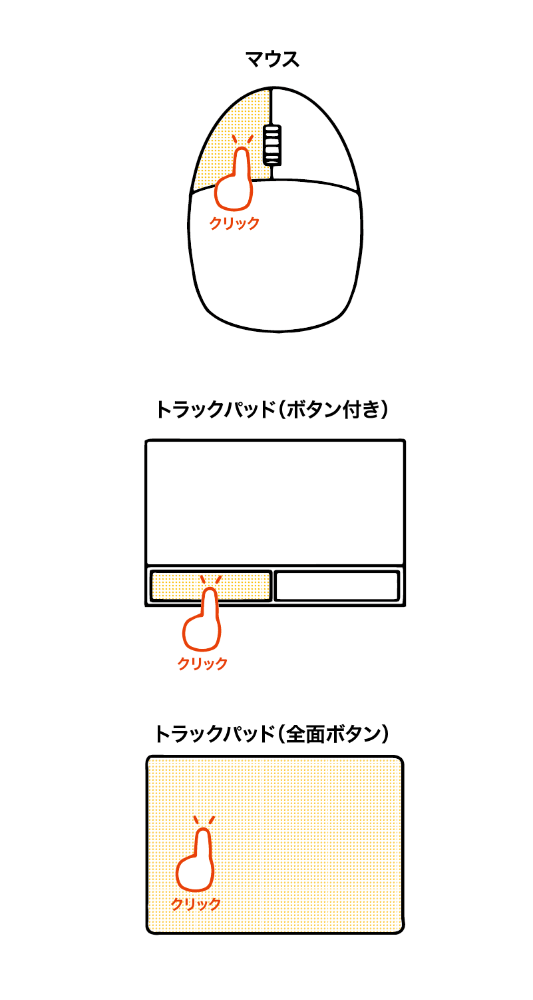
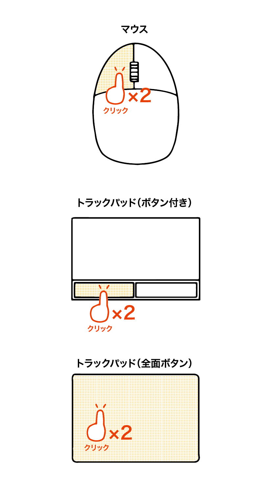
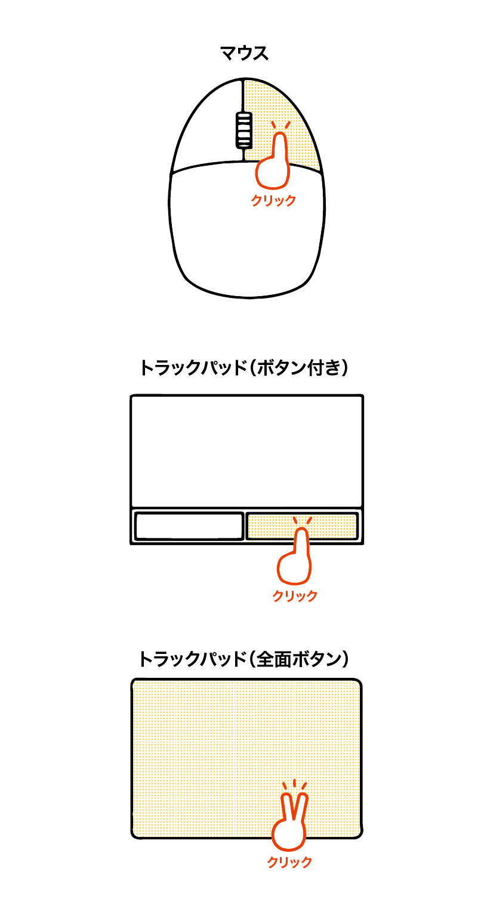
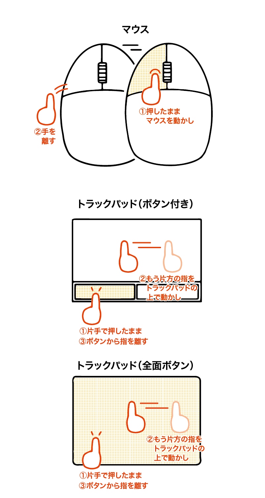
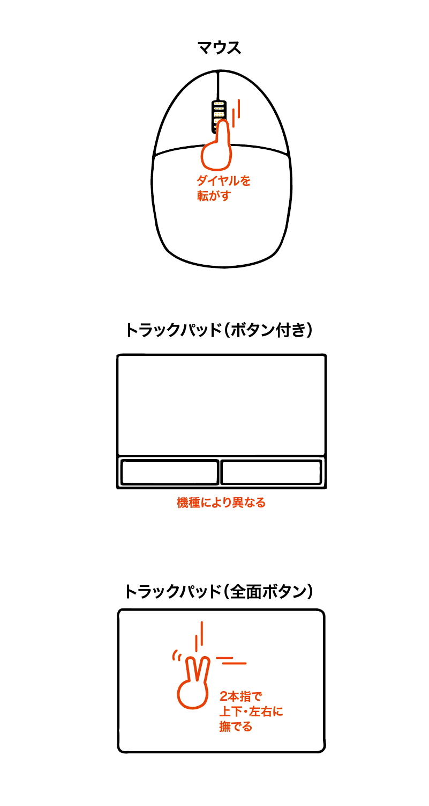
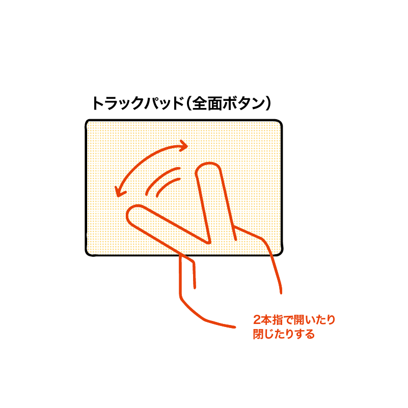

マウスやトラックパッドを操作しよう（Mac 編）
パソコンを起動するとさっそくマウス操作が必要になるので、その前にマウスの操作を学びましょう。
マウス とは、パソコンの画面上の矢印を操作するための装置です。スマホと違ってパソコンは画面をタッチ操作ではなく、マウスで操作します。
マウスの種類
マウスにはいくつか種類があります。
基本的なマウス
左右のボタンと、真ん中にスクロールホイールを備えたものです。家電量販店などでもよく見かけます。
Apple 社の Magic Mouse（マジックマウス）のように、スクロールホイールの代わりに、タッチ機能を備えた製品もあります。また、「多ボタンマウス」といわれる、ボタンを増やして便利にしたものもあります。
トラックパッド（タッチパッド）
主にノートパソコンに装備されているものです。
マウスのような左ボタン・右ボタンがあるものが基本ですが、近年はトラックパッド全体にボタンの機能をもたせたり、スマホのような拡大縮小の操作（ピンチイン・ピンチアウト）ができるものもあります。
ノートパソコンにはトラックパッドがあるため、マウスを購入する必要はありません。ただ、一般的なマウスの方が使いやすい場合はノートパソコンにもマウスを接続して利用できます。
Mac の場合、全体がボタンの機能を持っています。
マウスの仕組み
一般的なマウスは、裏面にレーザーやLEDなどが装備されており、その反射を読み取って移動を読み取ります。
これらの光は目を悪くしてしまうものもあるので、電源を ON にした状態で覗き込むのはやめましょう。
また、机の材質とマウスの種類によっては光の反射を上手く読み取れず、矢印がうまく動かないことがあります。
そういった場合はマウスパッドと呼ばれるシートを下に敷くことをおすすめします。
トラックパッドの仕組み
トラックパッドは、人間の指が表面を移動することで発生する微弱な電気の変化を読み取ります。
そのため、指ではないもの（ペンや棒）を使うと動きが反映されません。また、ペンなどを使うと故障のおそれがあります。
マウスポインタ（マウスカーソル）
画面上に表示されるマウスの矢印をマウスポインタ や マウスカーソル といいます。
マウスポインタは状況によって表示が変わります。
以下に Mac での表示の例を示します。なお、これ以外のマウスポインタもあります。
| Macでの表示 | 説明 |
|---|---|
| 通常の状態です。 | |
| パソコンが何か処理をしており、操作はできない状態です。 処理が終わるまで待ちましょう。 |
|
|  | 文字を編集できる状態です。 |
| Web サイトなどのリンクにマウスを合わせたときに表示されます。 | |
| ウィンドウなど、画面に表示されているもののサイズを変更するときなどに表示されます。 | |
| その操作ができないときに表示されます。 |
マウスの操作
移動
マウスを動かすと、その動きが画面内の矢印（ポインタ）に反映されます。
端っこに来てしまった場合
マウスが机の端に来てしまい、マウスを動かせない場合は一旦マウスを持ち上げて、もう1回動かしてみましょう。
マウスは机の表面に光を反射させているので、持ち上げている間は基本的に動かないという特性があります。
トラックパッドも同様です。もし、端っこに来てしまってこれ以上動かせないという場合でも、もう 1 回別の場所から指を動かすことで対応できます。
ポイント
マウスで画面上のアイコンや文字などを指し示すことをポイントといいます。
ボタンは押さず、ただポインタを合わせるだけです。
ポイントすることで詳細な情報が表示されたり、操作に関するヘルプが表示されたりします。
クリック
マウスの左ボタンを押すことをクリック（左クリック）といいます。Mac のトラックパッドでは、どこを押してもクリックになります。
なお、トラックパッドの場合はカチッと押さず、トンと軽く叩くだけでクリックになるものもあります。この操作を「タップ」といいます。
ダブルクリック
素早く連続で 2 回クリックすることをダブルクリックといいます。
右クリック
マウスの右ボタンでクリックすることを右クリック（副ボタンクリック）といいます。詳細なメニューなどを開く場合に使います。
Mac のトラックパッドでは、2 本の指でクリックすることで右クリックになります。
なお、「ダブルクリック」や「右クリック」と書かれていない限り、「クリック」という言葉は左クリックのことを意味します。
ボタンを3回押す「トリプルクリック」や右ボタンでのダブルクリックも一応存在しているのですが、ごく一部のアプリでしか使いません。
基本はクリック・ダブルクリック・右クリックだけを覚えておけば大丈夫です。
ドラッグ・アンド・ドロップ
マウスの左ボタンを押したまま動かし、目的の場所でボタンを離すことをドラッグ・アンド・ドロップといいます。
押したまま動かすことをドラッグ、離すことをドロップといいます。
基本的にドラッグとドロップは組み合わせて行う操作なので、「ドラッグ・アンド・ドロップ」といいます。
スクロール
画面内に収まらないものを表示するために、マウスホイールを転がすことをスクロールといいます。
Mac のトラックパッドの場合、2 本の指でトラックパッドを上下に動作させることで上下にスクロールできます。
また、左右に動作させると左右にスクロールできます。
ピンチイン・ピンチアウト（トラックパッドのみ）
Mac では、スマホのように 2 本の指をつかって拡大と縮小ができます。